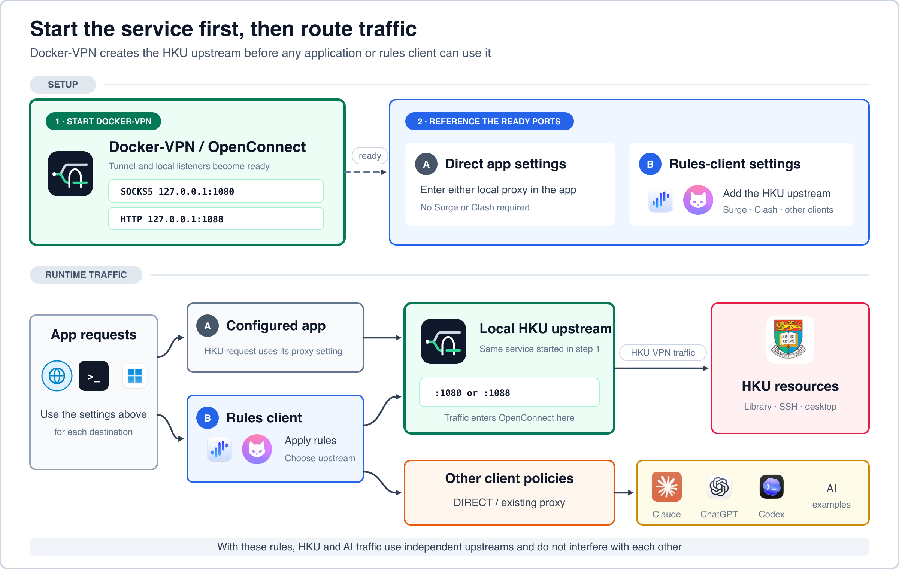

Direct application proxy
Enter SOCKS5 port 1080 or HTTP port 1088 in one browser, command, or application.
Direct proxy guideHKU VPN in Docker
Run OpenConnect with Microsoft Authenticator MFA inside a Docker container, then use the HKU tunnel through local SOCKS5 and HTTP proxies. Access HKU Library, campus SSH, and remote desktop without replacing your computer's default route.
Docker-VPN establishes HKU as a local upstream first. Applications can use it directly, or a compatible rules client can send only HKU destinations to it while every other policy stays unchanged.

Complete this path before configuring Clash, Surge, SSH, or remote desktop. The full README covers Docker Desktop, Linux, Windows WSL2, Bash, Zsh, and Fish.
First goal: make the final curl command return HTTP response headers through the local HKU proxy.
Colima is the lightweight recommended runtime. Docker Desktop also works.
brew install colima docker
colima start --cpu 2 --memory 2 --disk 20 \
--vm-type vz --mount-type virtiofs
docker infoBuild the local image directly from the public repository.
git clone https://github.com/rqhu1995/docker-vpn.git ~/docker-vpn
cd ~/docker-vpn
docker build -t local/vpn .
Replace YOUR_PORTAL_PIN with the static HKU Portal PIN,
not the current six-digit Authenticator code. Replace the example
UID in ~/.vpn/hku.env as well.
mkdir -p ~/.vpn
cp ~/docker-vpn/examples/hku.env.example ~/.vpn/hku.env
printf '%s' 'YOUR_PORTAL_PIN' > ~/.vpn/hku.pass
chmod 600 ~/.vpn/hku.passHKU_USER=youruid@connect.hku.hk
HKU_ENDPOINT=hkChoose one endpoint, then enter the current six-digit code at Response:.
~/docker-vpn/bin/hkuvpn hk # Hong Kong or overseas
~/docker-vpn/bin/hkuvpn cn # mainland ChinaKeep the VPN terminal open while running this test.
curl -x socks5h://127.0.0.1:1080 \
-I https://www.hku.hk/The local HKU proxy is useful with or without a separate proxy or rules client.
Enter SOCKS5 port 1080 or HTTP port 1088 in one browser, command, or application.
Direct proxy guideAdd HKU as one local upstream and leave direct, AI, and other VPN policies unchanged.
Rules-client examplesReach a campus host through HKU, or reverse-forward an existing client proxy to a remote coding agent.
Remote-access guideInstallation details, routing examples, reverse SSH, reliability, and troubleshooting live with the source repository.